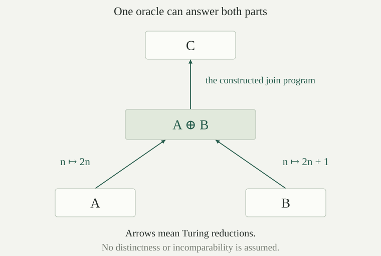

For sets \(A,B\subseteq\mathbb N\), a Turing reduction of \(A\) to \(B\) is a finite oracle program \(c\) satisfying
Write \(A\le_T B\) when such a program exists. The program is fixed before the input is supplied, and it must terminate with the correct zero-one answer on every input. It may ask several questions about \(B\), use negative as well as positive answers, and let later calculations depend on earlier answers. Thus \(B\) supplies enough information to decide membership in \(A\).
A procedure that runs forever on some nonmember of \(A\) cannot witness this reduction. Each no answer must also be returned after a finite computation. The finite query-program model fixes what computations are allowed; existence of an arbitrary set-theoretic function with the right values would say nothing about reducibility.
Turing reducibility is reflexive and transitive. More precisely, \(\mathbf Q\) witnesses \(A\le_T A\), and if \(c\) witnesses \(A\le_T B\) while \(d\) witnesses \(B\le_T C\), then the specified program \(\operatorname{subst}(d,c)\) witnesses \(A\le_T C\).
The query leaf returns \(E_A(\mathbf Q,x)=\chi_A(x)\), proving reflexivity. For transitivity, the hypothesis on \(d\) gives \(E_C(d,q)=\chi_B(q)\) at every numerical query. The substitution theorem therefore gives
The right side is defined for every input because \(c\) is a reduction. Consequently the substituted program terminates with that same bit on every input. Its finite syntax is obtained by replacing each query leaf of \(c\) by \(d\), so this is a particular reduction program, rather than a separate choice of a computation for each input.
If \(A\) is computable, then \(A\le_T B\) for every \(B\). If \(A\le_T B\) and \(B\) is computable, then \(A\) is computable. In particular,
Choose one ordinary program \(r\) for the total characteristic function of a computable \(A\). Its ordinary embedding \(\iota(r)\) ignores the oracle and still returns \(\chi_A(x)\), under every \(B\).
Conversely, let \(c\) witness \(A\le_T B\), and choose an ordinary program \(r\) for \(\chi_B\). The actual query-erasing compiler produces \(\operatorname{erase}_r(c)\), with ordinary evaluation equal to \(E_B(c,x)=\chi_A(x)\). This is an ordinary total decision procedure for \(A\). Finally, \(\varnothing\) is computable by the constant-zero program, giving the displayed special case.
Every many-one reduction gives a Turing reduction. If a total computable map \(f\) witnesses \(A\le_m B\), choose an ordinary program \(r_f\) computing \(f\). Then the specified program \(\operatorname{comp}(\mathbf Q,\iota(r_f))\) witnesses \(A\le_T B\).
Composition evaluates its second program first. On input \(x\), the ordinary inner program terminates with \(f(x)\), and the outer query returns \(\chi_B(f(x))\). The many-one equivalence says precisely that this bit equals \(\chi_A(x)\). Both stages terminate on every input. A many-one reduction therefore uses one query with unchanged answer, whereas the definition of Turing reduction permits other uses of the answers.
For every \(A\subseteq\mathbb N\), writing \(\overline A=\mathbb N\setminus A\), both \(\overline A\le_T A\) and \(A\le_T\overline A\) hold. Fix an ordinary program \(z\) for the zero test, which returns one at zero and zero at every positive input. The same finite program \(\operatorname{comp}(\iota(z),\mathbf Q)\) witnesses the first reduction for every \(A\).
The zero test reverses a Boolean answer. Under oracle \(A\), the program first receives \(\chi_A(x)\), then returns \(1-\chi_A(x)=\chi_{\overline A}(x)\). Each stage is total, proving \(\overline A\le_T A\). Apply this statement to \(\overline A\). Its complement is \(A\), giving the reverse reduction by the same program.
If \(B\) is c.e. and undecidable, then
In particular this holds for the diagonal halting set \(K=\{e:\varphi_e(e)\downarrow\}\).
The Turing reduction is . If \(\overline B\le_m B\), the computable-preimage property would make \(\overline B\) c.e. Both sides would then be c.e., so two-sided recognition would make \(B\) decidable, a contradiction. The halting-set theorem says that \(K\) has precisely these hypotheses.
Thus Turing reducibility is strictly more permissive than many-one reducibility. The same input query, followed by Boolean negation, already exhibits the difference.
The set \(K\) has an ordinary recognizer. Does this show \(K\le_T\varnothing\)? If a program asks a question about \(K\), why can we not simply run that recognizer until it supplies the oracle answer?
No. Even if the recognizer returns one whenever it stops, it need not stop on nonmembers of \(K\). It does not compute the total characteristic function required by a Turing reduction. Substituting it for a query can turn a negative answer into a computation that never finishes. The totality hypothesis for query replacement is therefore absent.
If \(K\le_T\varnothing\) did hold, would make \(K\) ordinary computable, contrary to halting undecidability. Enumerability permits positive recognition; an oracle must supply both membership answers.
Sets \(A,B\subseteq\mathbb N\) are Turing equivalent, written \(A\equiv_T B\), if \(A\le_T B\) and \(B\le_T A\). This is an equivalence relation: reflexivity follows from the query program, symmetry exchanges the two conditions, and transitivity applies in each direction.
The Turing degree of \(A\) is its equivalence class
Two sets have the same degree exactly when they are Turing equivalent. For one direction, transitivity and symmetry identify their classes. For the other, \(A\in[A]\) by reflexivity, so equality \([A]=[B]\) implies \(A\equiv_T B\). A degree records the information needed for membership decisions, rather than the particular numerical set carrying that information.
The rule
is independent of the chosen representatives and defines a partial order on Turing degrees.
Suppose \(A'\equiv_T A\) and \(B'\equiv_T B\). From \(A\le_T B\), transitivity gives the chain
Exchanging primed and unprimed representatives proves the converse, so the rule is well defined. Reflexivity and transitivity descend from set reducibility. If \([A]\le[B]\) and \([B]\le[A]\), then \(A\equiv_T B\), so their degrees are equal. This is antisymmetry. Reducibility on sets need not be antisymmetric; passing to the equivalence classes is the step that supplies it.
The computable degree \(\mathbf0=[\varnothing]\) is the least Turing degree, and
The halting degree is nonzero: \(\mathbf0<[K]\).
The empty set is computable, so gives \(\varnothing\le_T A\) for every \(A\). Thus \(\mathbf0\le[A]\). If \(A\) is computable, that same lemma also gives \(A\le_T\varnothing\), proving \([A]=\mathbf0\). Conversely, equality of these degrees implies \(A\le_T\varnothing\), and the lemma makes \(A\) computable. Since \(K\) is undecidable, its degree cannot be \(\mathbf0\). Leastness then gives the displayed strict inequality.
The query program witnesses \(K\le_T K\) and asks only one question on each input. Why does the finite-use theorem not make \(K\) computable? Does \(A\le_T K\), by itself, show that \(A\) is undecidable?
On input \(x\), the query program asks exactly whether \(x\in K\). It uses one bit, but computing that bit by an ordinary algorithm is the original membership problem. Finite use supplies a finite set of relevant positions for each halting computation; it supplies no ordinary procedure for their answers. Its convenient bound here is \(u=x+1\), which varies with the input.
There is no single initial-segment bound stabilizing this query program on every input and every oracle change. For any proposed \(u\), choose \(x\ge u\) and change just the oracle bit at \(x\). The new oracle agrees with \(K\) below \(u\), but the query output at \(x\) changes.
Nor does \(A\le_T K\) force \(A\) to be undecidable. For example, \(\varnothing\le_T K\), although the empty set is computable. A reduction bounds the information required by the lower problem; it does not force the lower problem to use all the information available from its oracle.
The join of sets \(A,B\subseteq\mathbb N\) is
Every natural number is uniquely either \(2n\) or \(2n+1\). Therefore
where \(x/2=\lfloor x/2\rfloor\) is natural-number division. The quotient and parity functions are primitive recursive. The tag, even or odd, identifies which problem the remaining quotient asks about.
The specified maps \(f_0(n)=2n\) and \(f_1(n)=2n+1\) witness, respectively,
Consequently \(A\le_T A\oplus B\) and \(B\le_T A\oplus B\).
Both maps are total primitive recursive. By the even and odd parts of the definition, \(n\in A\) exactly when \(2n\in A\oplus B\), and \(n\in B\) exactly when \(2n+1\in A\oplus B\). These are the required many-one identities. Apply to obtain actual oracle programs: compute the specified tagged input, then query its membership in the join.
For every \(A,B,C\subseteq\mathbb N\),
If the join reduces to \(C\), compose that reduction with the two reductions in . For the reverse implication, let \(c,d\) be fixed programs computing \(\chi_A,\chi_B\) under \(C\). We construct one finite program that computes the join under this same oracle.
Fix ordinary programs \(r_h\) and \(r_v\), independently of the sets and of \(c,d\), for the total primitive-recursive functions
They exist by primitive-recursive arithmetic and definitions by cases, followed by ordinary program completeness. Let \(I=\operatorname{pair}(\mathbf L,\mathbf R)\), which returns its input by the inverse pairing identity. Define the actual oracle-program trees
On input \(x\), the program \(D(c,d)\) returns \(\langle\chi_A(x/2),\chi_B(x/2)\rangle\). Both constituent computations terminate, because reduction programs return characteristic values on every input. Strict pairing may therefore compute both before the selector chooses one. Pairing with \(I\) preserves \(x\) as well, and \(v\) selects the bit matching its parity. Thus
This proves the reverse reduction using the displayed program. The construction uses the same common oracle \(C\) throughout and does not need an oracle for the two sets separately.

The rule \([A]\vee[B]=[A\oplus B]\) is independent of representatives and gives the least upper bound of the two degrees. For degrees \(\mathbf a,\mathbf b,\mathbf c\), it satisfies
Suppose \(A\equiv_T A'\) and \(B\equiv_T B'\). Then \(A\le_T A'\le_T A'\oplus B'\), and similarly \(B\le_T A'\oplus B'\). The universal property of the join gives \(A\oplus B\le_T A'\oplus B'\). Reversing the primed and unprimed sets gives equivalence of the joins, so their degrees agree. The same universal property says that their degree is precisely a least upper bound in the quotient order.
Least upper bounds are unique by antisymmetry. The degree \(\mathbf a\) itself is the least upper bound of \(\mathbf a,\mathbf a\), proving idempotence. The upper-bound conditions are symmetric in two arguments, proving commutativity. Since \(\mathbf0\) is least, the upper bounds of \(\mathbf0,\mathbf a\) are exactly the upper bounds of \(\mathbf a\), proving the unit identity. Finally, either parenthesized triple join is below a degree exactly when all three of \(\mathbf a,\mathbf b,\mathbf c\) are below it. Hence the two parenthesizations are the same least upper bound of those three degrees, proving associativity.
For an arbitrary \(A\subseteq\mathbb N\), compare the degrees of \(A\) and \(A\oplus\overline A\). Must a join always be strictly above both component degrees?
The two degrees are equal. The first lower-bound reduction gives \(A\le_T A\oplus\overline A\). Conversely, both \(A\le_T A\) and \(\overline A\le_T A\) hold, so gives \(A\oplus\overline A\le_T A\). Together these are Turing equivalence.
In degree notation, gives \([\overline A]=[A]\), and the calculation is \([A]\vee[A]=[A]\). Thus a join need not be strictly larger. Even the two distinct sets \(A\) and \(\overline A\) carry the same oracle information; taking both as tagged components adds no new degree.